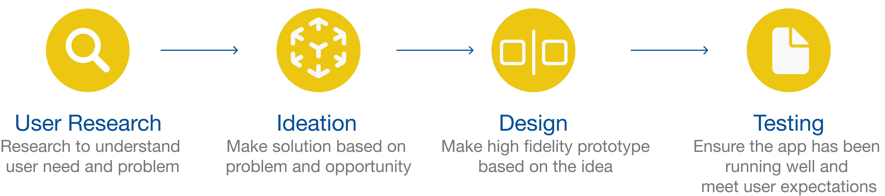
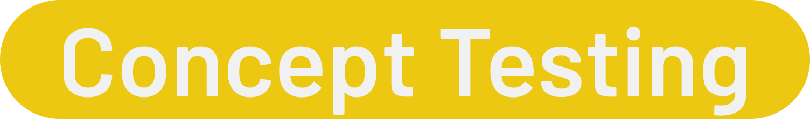
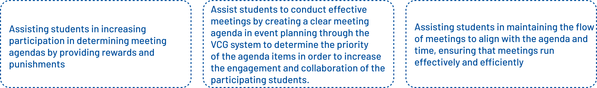
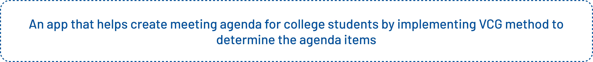
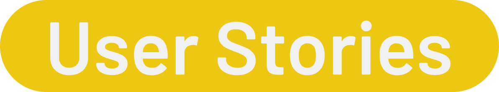
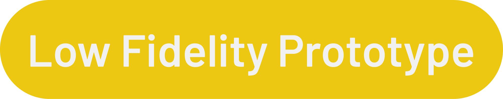
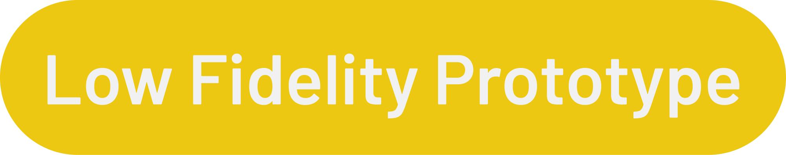

Resposibilitiy
- Conducting concept testing resulted in a 20% improvement in the alignment of concepts or ideas with user needs and preferences, as well as product acceptance.
- Creating visual asset elements to enhance the user experience can increase user engagement by up to 30%.
- Collaborating with the team using the Scrum methodology resulted in a 40% increase in project efficiency and a 25% reduction in development time.
Process
User Research
Meetings are crucial for event planning, but students organizing events often face challenges in conducting effective and efficient meetings. Research highlights three criteria for evaluating meeting quality: effectiveness, efficiency, and value index. Effective meetings satisfy requests, efficient meetings handle items promptly, and the value index prioritizes agenda topics.
However, many student-run meetings suffer from poor agenda selection, typically determined by one person without input from participants. This leads to dependence on one individual, omission of important items, and inclusion of irrelevant ones.
An alternative method, Vickrey-Clarke-Groves (VCG), involves collaborative agenda creation using a scoring system to prioritize items. This ensures participation and shared responsibility among meeting participants, resulting in an agenda focused on relevant discussion topics. Collaborative agenda setting improves meeting quality, making it more effective and efficient.
In this project, interviews were conducted with 8 students who actively participate in organizations and attend meetings. From the interviews, it was found that the agenda is crucial in meetings because a clear meeting agenda clarifies the duration of the meeting, allowing attending members to prepare opinions and suggestions regarding the agenda items to be discussed. They often conduct meetings for hours, and some even last almost a day due to unclear agenda items and unclear meeting objectives, with many members attending without knowing the meeting agenda. A good agenda is one that includes detailed discussion items, and all meeting attendees should be aware of the agenda topics to be discussed. Additionally, it is important to collaboratively create the meeting agenda, but this should only involve relevant stakeholders, especially in determining discussion items, to prevent the meeting from veering off track.
Ideation
We conducted concept testing to assess and evaluate ideas or concepts for further development. The goal is to understand users' responses and reactions to the concepts. In concept testing, we have three concepts as follows..
Based on the concept testing conducted with 11 target users, the selected solution concept is "Helping students to conduct effective meetings by creating clear meeting agendas in event planning through the VCG system to determine the priority of agenda items to enhance engagement and collaboration among participating students”. Therefore, the app statement derived from this is:
 In this project, there are 11 user stories as follows:

Design
 



Tools and Technology
In this project, Figma is used to create user interface designs ranging from mid-fidelity prototypes to high-fidelity prototypes. Additionally, Figma is also utilized as a collaboration tool with other designer team members.
Procreate is used to create visual assets that are used within the application and for logo design.
The Challenges
The difficulties we encountered during the development phase included determining the most suitable solution concept that aligns with user needs. In terms of flow, we experienced multiple changes with each iteration because users were not familiar with the design flow initially, and the flow was overly lengthy. Additionally, we faced challenges in selecting a color palette that conveys a sense of assistance and collaboration within the application.
Plans For Future Development
- Optimizing visual asset consistency
- Improving content writing
Ensuring that visual assets align with the overall design, including consistent color choices, typography, and visual style.
Determine the most important information and retain it, while less important details can be deleted or included in more detail if necessary.
Skill Learned
- Improving my skills and knowledge in UI/UX Design.
- Improving my skills and knowledge in UX Research.
- Improving my skills and knowledge in Visual assets.
- Improving my skills and knowledge in UX writing.
- Improving my skills in problem solving and communication.
Project information
- Category: Education
- Project date: May 2023 - Jun 2023
- Description: An application for collaboratively determining the agenda together, thereby enhancing the quality and productivity of meetings.